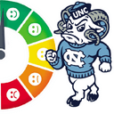

Registron

Tooltips: OFF
Turning this setting off will prevent detailed requests for comments from being sent when you hover your mouse over a profile.
Enable Feature 1
Enable Feature 2
Transcript Summary
Loading...
Cumulative GPA:
Career Earned Credits:
Transfer Earned Credits:
Majors:
Subplans/Minors:
Visit the
New ConnectCarolina unofficial transcript page
to fetch data.
Try Refreshing Data